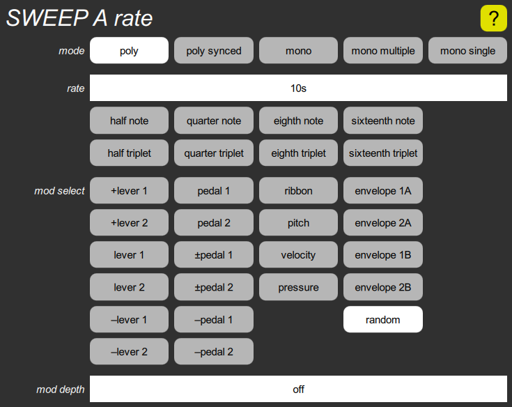

SWEEP rate cluster

This contains parameters related to the sweep synchonization and rate. The mode parameter chooses between a per-voice sweep or a common sweep in the virtual instrument, and also determines whether the sweep is reset to the start of a cycle on a key press.
The rate parameter is the basic rate before modulation. Slow rates are shown as cycle times in seconds, while faster rates are shown as frequencies in Hertz. The highest eight settings synchronize the sweep to received MIDI clocks (on any MIDI input port) with eight different possible ratios. These choices can be quickly selected with the buttons below the slider; they disable rate modulation.
The mod select parameter chooses what to modulate the sweep rate with, and the mod depth parameter determines how much the rate is varied.